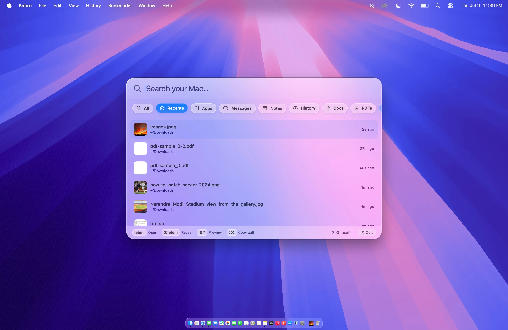
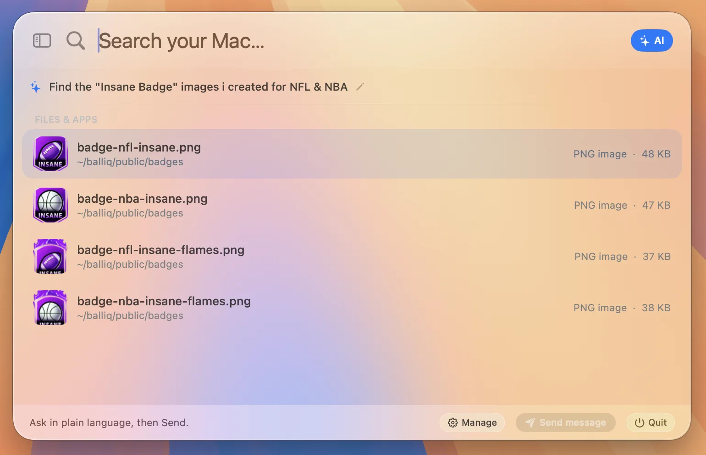
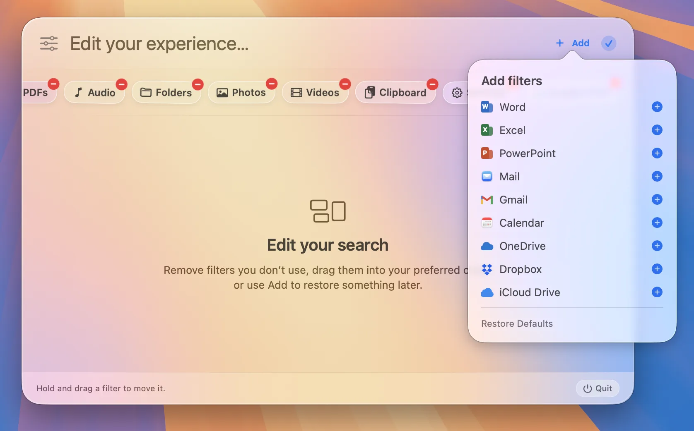
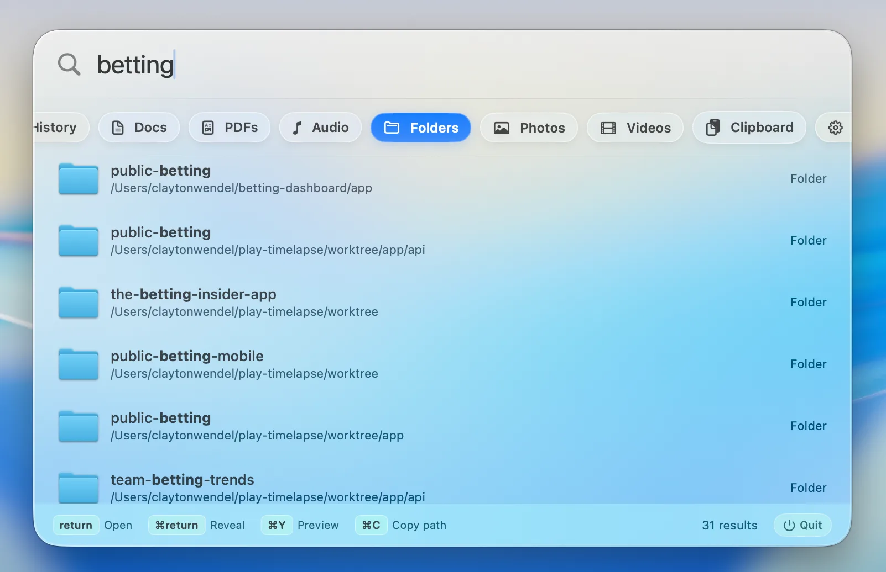
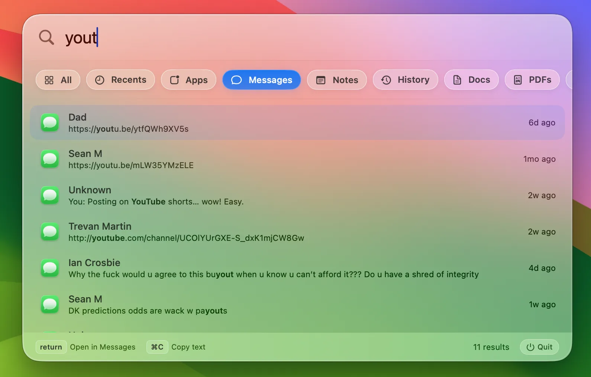
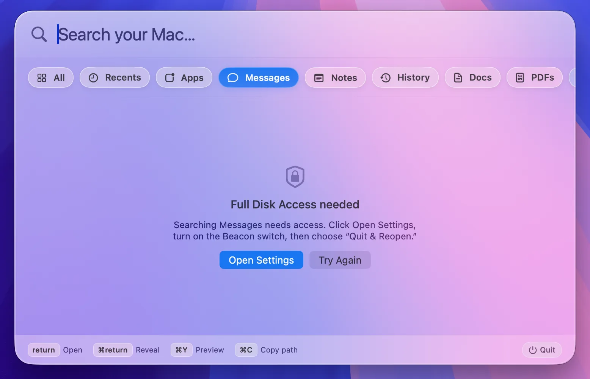
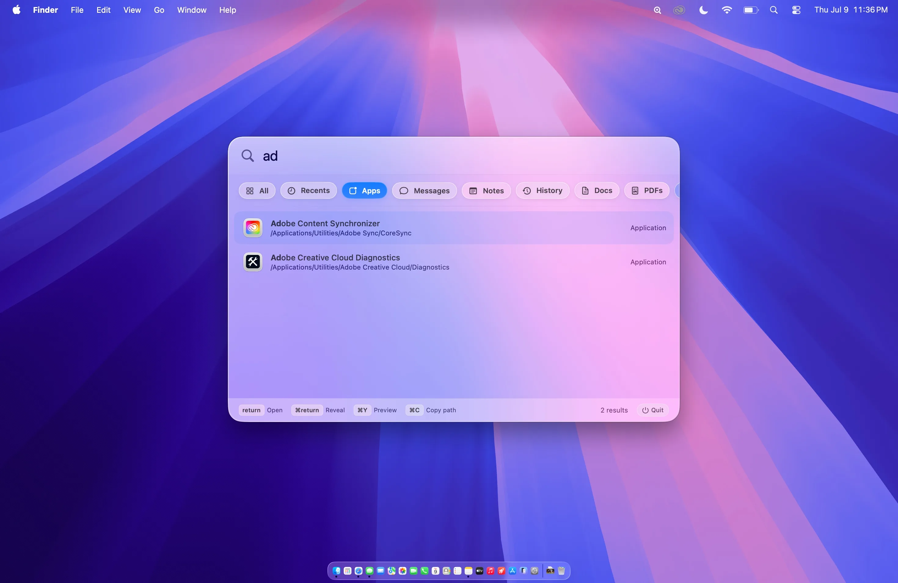

Local search, finally done right.

New · AI mode
Tell Beacon what you’re looking for in plain language — it hands back the actual files, messages, and emails, not a chat reply. Bring your own OpenAI, Claude, or Gemini key and pick any model.

One search bar
Choose a filter or search it all at once.
Scroll to explore
Built around you
Reorder or remove filters, then add Office, Mail, Calendar, and cloud drives whenever you need them.

Fresh files. Instantly.

Search every conversation.
By word or contact.

Your data stays on your Mac.

Type. Find. Launch.

$19.99 / 6 months · Native · Notarized by Apple · Download free, subscribe in the app
Beacon's full source code is public — Swift, SwiftUI, zero third-party dependencies. Read it, build it yourself, or contribute.